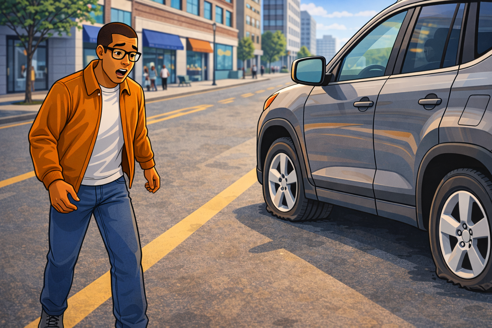
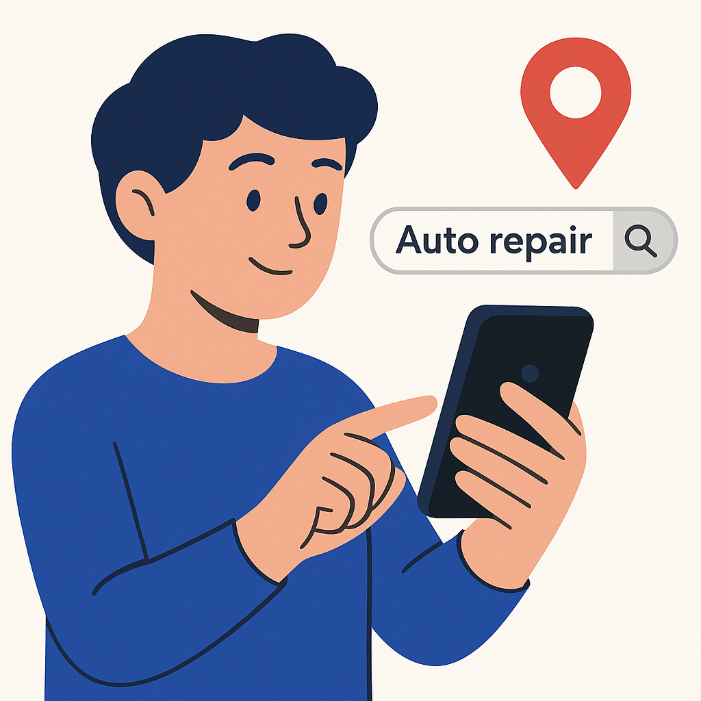
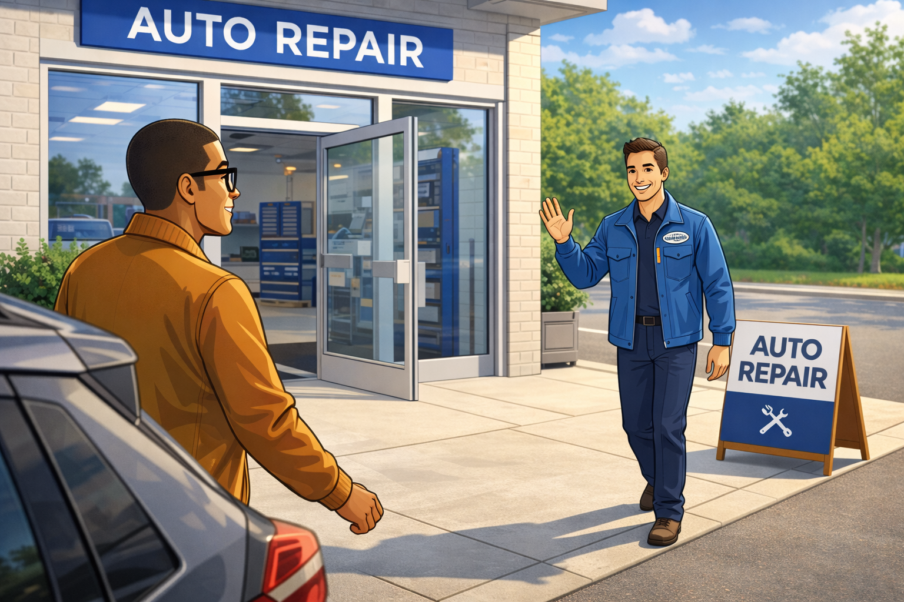

Variant A — Horizontal Timeline
Best above-the-fold on desktop. Scene progression shown in one scan line.


Narrative Hero Update
This six-scene animation flow shows how WrenchWorks turns emergency moments into trust, approved service, and repeat-ready customer experience.
File-order mapping applied: flat tire → search → arrival → approve quote → keys returned → review request.
Scene 01
Urgency starts the journey. We capture pain-point language and immediate intent.

Scene 02
Customer finds your shop through local SEO and confidence-building first impressions.

Scene 03
Wayfinding, location clarity, and brand consistency reduce drop-off before check-in.
Scene 04
Transparent estimate + clear next step = faster approvals and stronger trust.
Scene 05
Completion moment confirms quality and sets up retention-focused follow-up.
Scene 06
Automated SMS timing captures happy customers while service is still fresh.
Three placements for the same 6-scene storyline.
Best above-the-fold on desktop. Scene progression shown in one scan line.
Best for mixed desktop/mobile. Each scene gets context + CTA.
Best for service pages where quote form stays sticky and story supports trust.